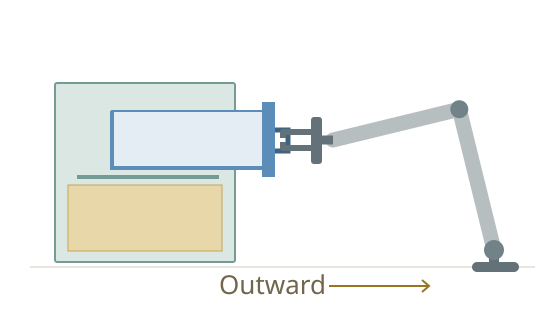

1. Language, vision, and robot actions
Explaining how to open a drawer, finding its handle in a picture, and commanding a robot to pull it require different abilities. This chapter uses the same cabinet to introduce three kinds of model: a large language model (LLM), a vision-language model (VLM), and a vision-language-action model (VLA).
We will compare what information each receives and what it produces. We will also distinguish understanding a picture from generating one, and see how an assistant can call another model to help with either task.

Explain the task. Locate the handle. Choose an action.
| Model | Example input | Example output |
|---|---|---|
| LLM | “How do I open a drawer?” | Written instructions. |
| VLM | Cabinet image + “Where is the handle?” | An answer based on the image. |
| VLA | Robot camera image + “Open the drawer.” | Movement and gripper commands. |
1.1 LLM: work with language
A large language model (LLM) learns patterns in language and can generate answers, explanations, or instructions. For the drawer task, we can describe the problem in words and ask it to suggest steps.
Input: “How do you open a drawer?”
Possible text output: “Hold the handle and pull outward.”
This answer explains the task. With only that written request, the model has no picture showing where this cabinet’s handle is. Here, generating an answer means producing text.
The term LLM describes language capability. Some models also accept images or other kinds of input; the next example uses that visual capability.
1.2 VLM: connect images and words
A vision-language model (VLM) combines visual information with language. Given the cabinet image and a question, it can connect the words “drawer handle” to a particular part of the picture. LLaVA[1] is one example: its image-processing component passes visual information to a language model.
A chat example: add a cabinet picture
A model that supports both text and images can handle either message below. The question stays the same; the information we provide changes.
Words alone
“Where is this cabinet’s drawer handle?”
No picture or description identifies this cabinet.
A possible reply: “Please send a picture or describe the cabinet.”
Picture + words
“Where is this cabinet’s drawer handle?”
The image shows which part is the drawer.
A possible reply: “On the blue drawer at the top.”
These are illustrative replies. With the picture, the answer can refer to this cabinet, using visual information as well as words.
One model can understand words and pictures
LLM emphasizes language ability; VLM emphasizes combining vision and language. The labels can overlap. A model that handles more than one kind of information, such as text and images, is called multimodal.
GPT-4o[2], for example, was trained to process text and images within one model. When it receives the cabinet picture, it can use its own visual capability to answer. Uploading a picture therefore does not, by itself, mean that the application has switched models.
Reading a picture and generating one
Understand the cabinet picture
Input: the existing picture + “Where is the drawer handle?”
Output: “On the blue drawer at the top.”
The task is to interpret what the supplied picture shows.
Create a cabinet picture
Input: “Draw a blue cabinet with a gold door.”
Output: a new image of a cabinet.
Editing is another image-generation task: supply a picture and ask to change the door’s color.
Both tasks can appear in the same chat application. Their requested outputs are different: an answer about an image, or an image itself. OpenAI’s image guide[3] describes both uses.
How can an assistant call another model?
A chat application can connect its main model to other models through tools. The assistant requests a tool, and the application sends the required inputs to it and returns the result. This lets the assistant delegate a task.
Call a VLM to read the picture
Call a VLM to read the picture
- 01Assistant requests help
Ask a visual tool to locate the drawer handle.
- 02VLM examines the image
The application supplies the cabinet picture and question. The VLM returns a description of the handle’s location.
- 03Assistant uses the result
Answer: “On the blue drawer at the top.”
This is an alternative to the main model reading the image itself. HuggingGPT[4] is a research example of an LLM selecting other models and using their results to compose a response.
Call an image model to draw a picture
Call an image model to draw a picture
- 01Assistant requests an image
Send “Draw a blue cabinet with a gold door” to an image-generation tool.
- 02Image model creates it
The model generates an image from the description.
- 03Application displays it
The new cabinet picture appears in the conversation.
OpenAI’s image-generation tool[5] supports this arrangement: a main model can call a separate GPT Image model to generate or edit an image.
Reading and drawing name the tasks. Calling a tool describes how the work is assigned. A model with its own vision capability can still call another model to create pictures.
1.3 VLA: produce robot actions
A vision-language-action model (VLA) uses visual information and an instruction to produce robot actions. Depending on the model, it may also use information about the robot’s current position.
For the cabinet task, the input is the robot’s camera image and “Open the drawer.” The output can be numbers telling its gripper—the robot’s grasping hand—where to move and whether to open or close. A robot controller turns those commands into signals for the robot’s motors. The next camera image shows what actually happened.
Opening a drawer, step by step
In this example, the gripper is already holding the handle. The diagram illustrates one possible action, not a recorded prediction from a trained model.
-
1 Camera image + instruction

Drawer: 0 cm open
Gripper: holding the handleInstruction“Open the drawer.”
The image shows the current situation. The words give the task.
-
2 Process the image and instruction
This example follows the broad structure of OpenVLA[6]. These components work together within the VLA.
Inside a VLAProcess an image and an instruction
- 01Image encoder + adapterTurn the image into numerical features the main model can use.
- 02Vision-language backboneCombine those features with the instruction “Open the drawer.”
- 03Action outputProduce action values. Here, a possible result is an outward movement with the gripper kept closed.
-
3 A possible command
- Move outward
- +0.10 m
- Gripper
- Keep closed
In words: “Move the gripper 10 cm outward while holding the handle.”
These are two readable fields for this one-direction example. A real robot’s command format can include more movement values.
-
4 Controller → movement → new image
The controller tries to execute the command. If the drawer slides freely and the grip holds, the drawer can follow the gripper outward.

Possible result: 10 cm open If the drawer is locked, it stays at 0 cm instead. The next camera image shows the actual result, so the next prediction can use that new information.
The new camera image goes back to step 1. The model can then choose another action.
What does “predict an action” mean?
A VLA is trained using examples that pair observations and instructions with robot actions. It learns patterns in those examples. When given a new image and instruction, it uses what it learned to produce the next action values.
For the same instruction, “Open the drawer,” different views can call for different commands:
| What the image shows | Example next command |
|---|---|
| The open gripper is positioned around the handle. | Move 0 cm; close the gripper to grasp it. |
| The gripper is already holding the handle. | Move 10 cm outward; keep closed. |
These are illustrative commands. Here, “predict” means propose the next action.
The structure is simplified from OpenVLA, whose predicted outputs are decoded into numerical robot commands. Other VLAs can organize their action outputs differently.
What happens after the robot tries to pull?
The VLA proposes a movement; the controller tries to carry it out. A freely sliding drawer may follow the gripper, while a locked drawer stays shut. The next observation helps the model choose what to do next.
This interaction can happen with a real cabinet or in a simulation. In simulation, a physics engine calculates the movement, and a renderer produces the next camera image. Robot interaction in Chapter 4 explains how the model, controller, and simulator work together.
References
- Haotian Liu, Chunyuan Li, Qingyang Wu, Yong Jae Lee. Visual Instruction Tuning. arXiv preprint arXiv:2304.08485, 2023. arXiv
- OpenAI, Aaron Hurst, Adam Lerer et al. GPT-4o System Card. arXiv preprint arXiv:2410.21276, 2024. arXiv
- OpenAI. Images and Vision. OpenAI API documentation, 2026. Accessed 25 November 2026. link
- Yongliang Shen, Kaitao Song, Xu Tan et al. HuggingGPT: Solving AI Tasks with ChatGPT and its Friends in Hugging Face. arXiv preprint arXiv:2303.17580, 2023. arXiv
- OpenAI. Image Generation. OpenAI API documentation, 2026. Accessed 25 November 2026. link
- Moo Jin Kim, Karl Pertsch, Siddharth Karamcheti et al. OpenVLA: An Open-Source Vision-Language-Action Model. arXiv preprint arXiv:2406.09246, 2024. arXiv